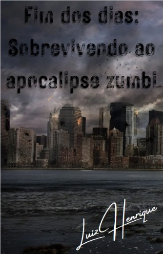
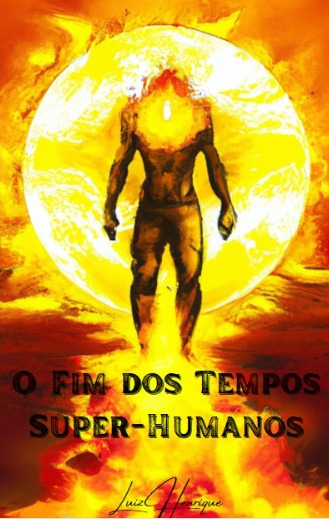

Fim dos dias: Sobrevivendo ao apocalipse zumbi

Capítulo 1 - Aiden Stone: Sobrevivente
Aiden Stone acordou em uma cama de hospital, mas sua mente estava confusa e turva.
Ele não
conseguia se lembrar de nada do que havia acontecido antes. Seu corpo doía e ele sentia uma fome
insaciável.
Leia mais
O Fim Dos tempos

Capítulo 1 - A descoberta
Thomas era um adolescente comum, morava com sua mãe em uma pequena cidade no interior dos
Estados Unidos. Tudo mudou quando ele descobriu que tinha superpoderes. Um dia, ele estava andando pela
cidade quando foi atacado por um grupo de zumbis. Sem saber como, ele se viu do outro lado da cidade em
questão de segundos.
Leia mais